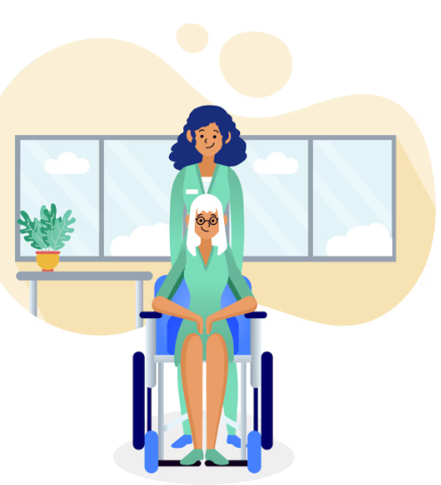
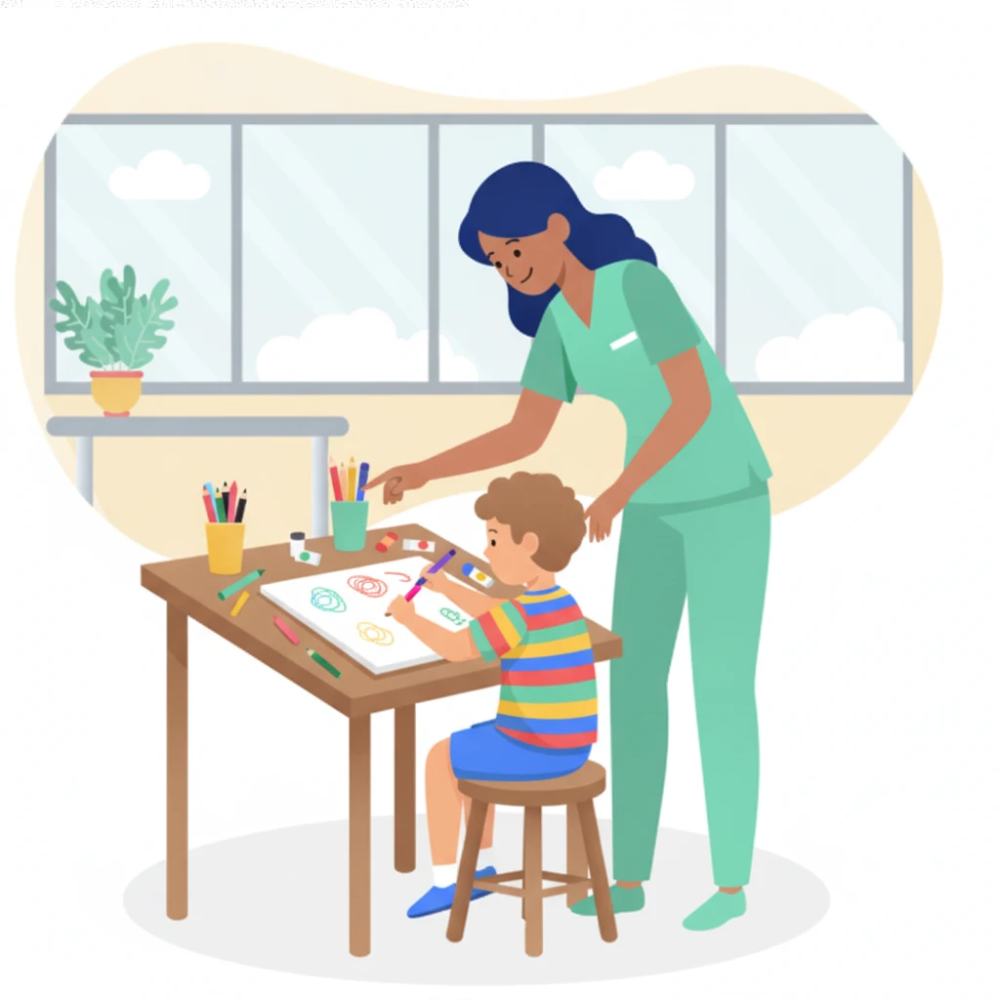
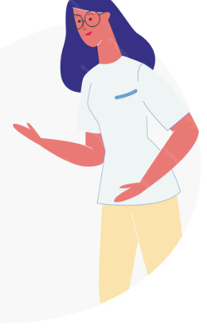
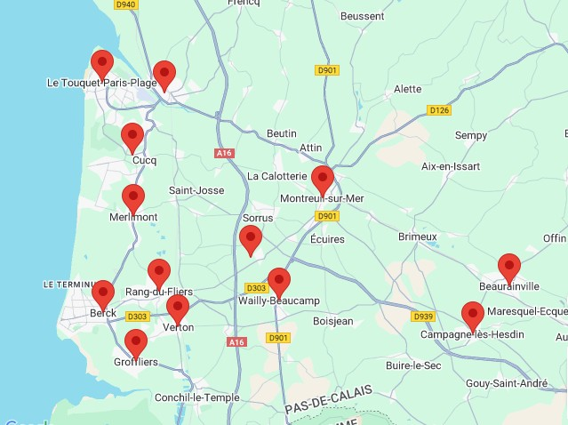

Les adultes et les seniors

Confrontés à une perte d'autonomie liée à l'âge, à une maladie neurologique ou à un handicap.
Découvrir l'accompagnement adultesSecteur Montreuillois & Côte d'Opale
Ergothérapeute diplômée d'État depuis 2016, j'exerce à domicile auprès des adultes, des seniors et des enfants.
Je vous accompagne dans le maintien ou le développement de votre autonomie, avec une approche personnalisée, bienveillante et adaptée à votre rythme de vie.

Confrontés à une perte d'autonomie liée à l'âge, à une maladie neurologique ou à un handicap.
Découvrir l'accompagnement adultes
Présentant des difficultés d'écriture ou un trouble du neurodéveloppement.
Découvrir l'accompagnement enfantsJe travaille en lien avec vos proches, vos aidants et les professionnels qui vous suivent, pour un accompagnement cohérent.
Les séances ont lieu dans votre environnement de vie : domicile, milieu scolaire, EHPAD, MARPA ou résidence autonomie.
L'ergothérapie pour moi, c'est une reconversion professionnelle.
Ainsi, mon histoire personnelle a créé une vocation. C'est donc à 37 ans que j'ai décidé de me reconvertir.
Je suis diplômée d'État en ergothérapie depuis 2016 et j'ai depuis accompagné plus de XX personnes.

Avis
55 € / heure · adultes
50 € / 45 min · enfants
45 € / heure · compte rendu, synthèse, argumentaire, réunion interprofessionnelle
Le tarif comprend la préparation, le matériel et les échanges avec les proches.
Indemnités de déplacement à calculer en fonction de votre adresse.
Annulation à moins de 48 h : 20 €.
De nombreuses mutuelles ou caisses de retraite remboursent partiellement les séances d'ergothérapie.
L'ergothérapie n'est pas remboursée par la Sécurité sociale. Pour les enfants, renseignez-vous auprès de la MDPH et de votre mutuelle.
J'interviens exclusivement à domicile dans le Pas-de-Calais (62), entre Berck-sur-Mer, Le Touquet-Paris-Plage, Étaples, Montreuil-sur-Mer et Beaurainville, ainsi que dans les communes avoisinantes.
Un doute sur une commune non marquée sur la carte ? Contactez-moi afin d'échanger.

N'hésitez pas à me contacter, je serai heureuse d'échanger au sujet de votre besoin d'accompagnement.
Du lundi au vendredi de 09h à 18h